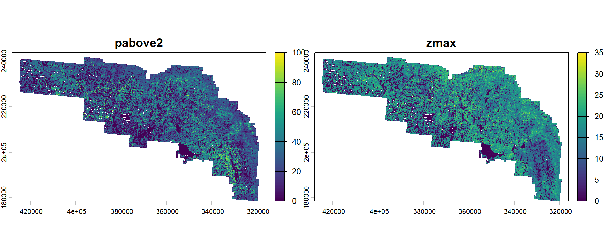
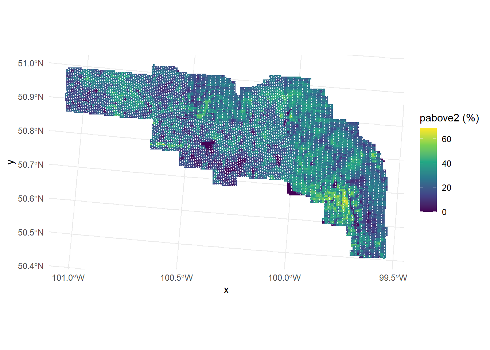

library(here)
library(sf)
library(dplyr)
library(terra) # raster data
library(exactextractr) # fast zonal statistics over polygons
library(ggplot2)Adding covariates and building a prediction grid
Introduction
Density surface models explain variation in counts along the transects using spatial and environmental covariates, and then predict density over the whole study area from the same covariates. Covariates therefore have to be available in three places: at each sighting (to model detectability), for each segment (to fit the density surface model), and for each cell of a prediction grid (to predict from it). The dsm examples skip this step because their data ship with covariates already attached. Here we extract them from raster layers.
We use two canopy metrics derived from airborne lidar over Riding Mountain National Park, both at 10 m resolution:
pabove2: the percentage of lidar returns above 2 m, a measure of canopy cover. Dense cover may hide animals from observers and also shapes where moose feed and shelter.zmax: the maximum canopy height (m), which separates open areas, shrubs, young regenerating stands and mature forest.
Any raster layer can be used in the same way. The only requirements are that it covers the whole study area and that it describes something plausibly linked to detectability or density.
Prerequisites
We load the tables built in Formatting aerial survey data.
survey <- readRDS(here("workflow", "outputs", "survey_data.rds"))
list2env(survey, envir = environment())<environment: R_GlobalEnv>Covariate rasters
Both metrics are stored as the two layers of a single GeoTIFF, as whole numbers (percent and metres) to keep the file small. The raster is already in the workflow CRS; if yours is not, reproject it once with terra::project() before starting, rather than in every script.
lidar <- rast(here("data", "RMNP", "lidar", "lidar_pabove2_zmax_10m.tif"))
names(lidar) <- c("pabove2", "zmax")
stopifnot(same.crs(lidar, paste0("EPSG:", LOCAL)))
lidarclass : SpatRaster
size : 6531, 11192, 2 (nrow, ncol, nlyr)
resolution : 10, 10 (x, y)
extent : -428030, -316110, 178430, 243740 (xmin, xmax, ymin, ymax)
coord. ref. : NAD83(CSRS) / Canada Atlas Lambert (EPSG:3979)
source : lidar_pabove2_zmax_10m.tif
names : pabove2, zmaxplot(lidar, nc = 2)
Detection covariates at sightings
Vegetation near an animal may hide it from observers, so both metrics at each sighting location are candidate covariates for the detection function. They are extracted at the sighting points.
pts <- vect(dist, geom = c("X", "Y"), crs = paste0("EPSG:", LOCAL))
dist <- cbind(dist, extract(lidar, pts, ID = FALSE))
summary(dist[, c("pabove2", "zmax")]) pabove2 zmax
Min. : 0.00 Min. : 0.00
1st Qu.:11.00 1st Qu.:11.00
Median :21.00 Median :16.00
Mean :22.28 Mean :14.87
3rd Qu.:31.00 3rd Qu.:20.00
Max. :80.00 Max. :28.00 Segment covariates
For segments we summarise each covariate over the strip actually searched: the segment buffered by the truncation distance. exact_extract() weights each raster cell by the fraction of it inside the strip, and we take the mean.
strips <- st_buffer(segs, dist = TRUNCATION_M)
seg_means <- exact_extract(lidar, strips, fun = "mean", progress = FALSE)
names(seg_means) <- names(lidar)
segs <- segs |>
bind_cols(seg_means) |>
st_drop_geometry() |>
as.data.frame()
summary(segs[, names(lidar)]) pabove2 zmax
Min. : 0.00 Min. : 0.00
1st Qu.:18.74 1st Qu.:11.47
Median :24.84 Median :14.27
Mean :24.89 Mean :13.75
3rd Qu.:30.88 3rd Qu.:16.48
Max. :65.25 Max. :24.15
NAs :1 NAs :1 One segment lies outside the lidar coverage. It has no sightings, so we can drop it; had it contained sightings, those would need to be dropped from dist and obs too.
segs <- segs[complete.cases(segs[, names(lidar)]), ]
stopifnot(all(obs$Sample.Label %in% segs$Sample.Label))Prediction grid
The prediction grid covers the study area with square cells. Cells should not be much smaller than the segments: the model cannot resolve detail below the scale it was sampled at, and many small cells make variance estimation slow. We use 500 m cells, about the length of one segment.
CELL_SIZE_M <- 500
cells <- st_make_grid(area, cellsize = CELL_SIZE_M, what = "polygons")
centres <- st_centroid(cells)
inside <- lengths(st_intersects(centres, area)) > 0
pred <- st_sf(geometry = cells[inside])
xy <- st_coordinates(centres[inside])
pred$x <- xy[, 1]
pred$y <- xy[, 2]
pred$area <- CELL_SIZE_M^2
nrow(pred)[1] 12485The same covariates are then extracted for every cell.
pred_means <- exact_extract(lidar, pred, fun = "mean", progress = FALSE)
names(pred_means) <- names(lidar)
pred <- bind_cols(pred, pred_means)
pred <- pred[complete.cases(st_drop_geometry(pred)), ]
nrow(pred)[1] 12214Cells with missing covariate values fall outside the lidar coverage and are dropped: predicting there would mean predicting without data.
ggplot() +
geom_sf(data = pred, aes(fill = pabove2), colour = NA) +
geom_point(data = segs, aes(x, y), size = 0.1, colour = "white") +
scale_fill_viridis_c(name = "pabove2 (%)") +
theme_minimal()
Before saving, we check the tables again, now with the prediction grid and the covariates. This also confirms that segments and grid share a coordinate system: a grid in longitude and latitude alongside segments in metres would make every prediction an extrapolation.
source(here("workflow", "R", "check_survey_data.R"))
checks <- check_dsm_data(dist, segs, obs, pred, covariates = names(lidar),
truncation = TRUNCATION_M)PASS dist: required columns
PASS segs: required columns
PASS obs: required columns
PASS pred: required columns
PASS dist: plain data.frame (not sf)
PASS segs: plain data.frame (not sf)
PASS obs: plain data.frame (not sf)
PASS no units-class columns
PASS dist: object IDs unique
PASS obs: object IDs unique
PASS segs: Sample.Label unique
PASS obs -> dist: every object has a detection
PASS dist -> obs: every detection is linked to a segment
PASS obs -> segs: every Sample.Label exists
PASS segs: Effort > 0
PASS dist: distances >= 0
PASS dist: distances within truncation
PASS segs: coordinates present
PASS segs: covariate columns
PASS segs: covariates complete
PASS pred: coordinates and area complete
PASS pred: covariate columns
PASS pred: covariates complete
PASS segs and pred in the same coordinate systemWe keep the grid as an sf object so it can be mapped later, and save it with the updated tables.
saveRDS(
list(dist = dist, obs = obs, segs = segs, pred = pred, area = area,
TRUNCATION_M = TRUNCATION_M, LOCAL = LOCAL, CELL_SIZE_M = CELL_SIZE_M),
here("workflow", "outputs", "model_data.rds")
)